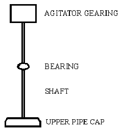

Synthesis of Phenylacetic Acid[ Back to the Chemistry Archive ] Phenylacetic Acid from Benzyl Chloride [8]10% of a solution of 125 g benzyl chloride [1] in 250 ml of sodium-distilled diethyl ether is added to 24 g magnesium turnings under 100 ml ether, and a small iodine crystal is added. after start of the grignard reaction the rest of the benzyl chloride is added with stirring to maintain gentle boiling (if the reaction becomes too vigorous, useless 1,2-diphenylethane is formed) and the mixture is heated and stirred until most magnesium is dissolved. The grignard reagent solution is poured on 1 kg water-free, crushed dry ice (solid CO2) and stirred for 2 hrs. 200 ml warm ether is added and the mixture is heated in a water-bath until the internal temperature reaches 25�C. 200 ml 32% hydrochloric acid is added, and the heterogenous mixture stirred until any inorganic precipate is dissolved. after filtering, the organic layer is separated, washed with cold water, and dried over 20 g anhydrous sodium sulfate. The ether is distilled off, and the rest is recrystallized from water, to yield 75% - about 100g - phenylacetic acid, mp 76-77�C. Phenylacetic acid from Benzyl Cyanide [2]In a silica basin of about 35 cm. diameter, a mixture of 2.5 kilos of benzyl cyanide [3] and 7.5 kilos of 70% sulfuric acid is warmed until a few bubbles of gas appear. The heating is at once stopped, since a very vigorous action now ensues. As the vapors evolved are injurious to health, the basin is covered when the reaction begins with a sliding cover from which the vapors can be led into water. As soon as the reaction ceases, the product is poured upon crushed ice in a large, earthenware vessel. Crude phenyl acetic acid, contaminated on the surface with phenyl acetamide, is precipitated on cooling. In order to remove the amide, the acid is dissolved in lukewarm dilute soda solution. The amide remains undissolved and can be filtered off, while the phenyl acetic acid goes into solution as sodium salt and is reprecipitated in a sufficiently pure state by the addition of dilute mineral acid. After drying it is acceptably pure. Further Purification The acid is dissolved in five times its weight of boiling water, filtered off and allowed to cool. Phenylacetic acid separates out in an absolutely pure state in the form of flakes with a mother of pearl lustre. After filtering and drying it possesses a pleasant honey scent. Phenylacetic acid from mandelic acid [4]15 grams mandelic acid (0.1 mol) [5], 2.07g KI (6.25% of theory), and 6g Red Phosphorous is dissolved in a solution of 70ml phosphoric acid and 10 ml of water, and this solution is refluxed for six hours (bp of soln 144�C). After the reaction mixture has cooled down, a little water is added to dissolve precipitated inorganic salts. The solution is extracted with ether, and the pooled extracts washed with a little dilute NaHSO3, followed by water, and is then dried over Na2SO4. The ether is removed under diminished pressure and the residue is distilled (bp 138-139 @13mmHg). The yield is 12.5 grams (90%) of phenylacetic acid melting at 76�C. 3.2 grams of phosphorous could be recovered from the aqueous solution. Phenylacetic acid from acetophenone [9]Methyl phenylacetate 4.56g (38 mmol) acetophenone, 10ml methanol, 22g (150 mmol, 20ml) boron trifluoride etherate (BF3*Et2O) is added in one potrion to a magnetically stirred suspension of 17.7g (40 mmol) lead tetraacetate in 100ml benzene. The reaction mixture is stirred at room temp for 5h, diluted with 500ml cold water, extracted with 600ml benzene, washed with 150ml satd. NaHCO3, 200ml satd. NaCl, and then dried over sodium sulfate and filtered. Evaporation of the solvent and vacuum distillation of the residue gave methyl phenylacetate in 86% yield, bp 94-96C/5mmHg. Phenylacetic acid 2.4g (16 mmol) methyl phenylacetate and 10ml 2M NaOH is refluxed for 2h. The free phenylacetic acid is precipitated by the addition of conc HCl (~3ml), in 92% yield, mp 76-76.5�C. The Willgerodt Reaction can also be used to transform acetophenone (or styrene) to phenylacetic acid. Phenylacetic Acid From Ethylbenzene [6,7]This reaction is pretty simple and cheap to do, but requires a little bit of preliminary engineering and construction. The engineering and construction consists of getting some sturdy steel pipe, welding two or three agitator vanes on the inside of the pipe, and pulling the agitation gearing out of an old washing machine and reinstalling it onto the pipe. It's no great challenge. This reaction was originally reported in 1962 [7]. It was found that when ethylbenzene was heated with sodium dichromate in water solution at a temperature of 275�C inside an autoclave, a 90% yield of phenylacetic acid resu1ted. Ethylbenzene is churned out in huge quantities by the chemical industry, as it finds use as a feedstock for making styrene and also as a solvent for plastic resins. Any attempt to try to keep track of its commercial flow would be futile. Drums of it are easily available once you give yourself a corporate name. Similarly, sodium dichromate is heavily used by industry. Its largest and most common use is probably to passivate stainless steel. This process essentially consists of immersing a piece of stainless steel into a vat containing a mixture of nitric acid and sodium dichromate. The passivated stainless steel is more corrosion resistant than untreated steel. Calling yourself some kind of metal finishing or polishing operation and getting a shed or something to work in will make ordering a thousand pounds of sodium dichromate pretty easy. An alternative source of dichromate is used chrome plating bath picked up on one of the waste exchanges. The typical used chrome plating bath will contain 32 ounces per gallon of chromic acid. The exact concentration will come with the analytic sheet. This is a 2 molar chromic acid solution. At this concentration, the great majority of the chromic acid is in the form of the dichromate. To get a sodium dichromate solution, add 20% sodium hydroxide to the chrome plating bath, slowly and with stirring, until the pH reaches 8 or 9. Then add water until the volume of the solution is double that of the starting chrome plating bath. The tramp metals in the bath, such as iron, copper or nickel, will settle out as hydroxide sludge. Decant off this sludge, and filter to get a clean .5 molar dichromate solution. The following example is given for a .25 molar size batch, but the procedure could easily be scaled up to at least one molar and beyond by giving allowance for the longer period of time such a larger batch would require to heat up to the proper reaction temperature. First one starts with a section of heavy pipe, of a volume of about 1500ml. It should have fine threads on each end. Obtain heavy pipe caps with matching threads for both ends. Most pipe will come with a heavy coating of zinc galvanizing on it. This must be removed by immersing the pipe and caps in 5% hydrochloric acid solution until the rapid fizzing caused by the dissolving of the zinc slows to a crawl. Then thoroughly rinse the pipe and caps in clean water, and dry to prevent rust. Then agitator vanes should be welded onto the interior of the pipe. There should be three or more vanes, depending upon the diameter of the pipe. For example, a one gallon size pipe section for a one mole batch scale should have four vanes to get good agitation. They should run the entire length of the pipe section, and extend about halfway in from the wall of the pipe. The agitator vanes, of course, should be made of steel, and be clean and free of paint. Once the vanes are welded in, the bottom cap can be screwed on the pipe, tightened down with a pipe wrench, and preferably welded into place. Now the cap assembly is constructed. It consists of a shaft welded onto the top of the upper pipe cap. The shaft runs to the washing machine agitator gearing, preferably with a bearing about halfway up the shaft to prevent wobbling as the agitator is going. To do the reaction, put 1000ml of water into the pipe, along with 74 grams of sodium dichromate. Alternately put 600ml of water in the pipe along with 400ml of the .5 molar dichromate solution made from the used chrome plating bath. Next add 30ml of ethylbenzene. Then screw the pipe into the upper pipe cap, and tighten it with a pipe wrench. The reaction mixture must be rapidly heated to 275�C. The best way I can think of to do this is to use a solder as a high temperature heating bath. Spools of solder can be easily picked up at the hardware store and tossed into a heavy iron pot for melting. Solder melts at about 220C, and so makes a suitable heating bath for this reaction. The solder bath should be heated to about 300C, then the pipe reaction vessel should be immersed in it to a depth about equal to the depth of the liquid inside the pipe, and agitation should then be commenced on the pipe reaction vessel. The solder bath should be of a volume at least equal to the reation pipe so that it holds a fair sized heat reservoir. The temperature of the solder bath will quickly fall when the pipe is immersed, but it shouldn't be allowed to fall below 275�C. It will take about 15 to 20 minutes for a batch of this size to warm up to the reaction temperature of 275�C. A larger batch will take longer to warm up. The geometry of the pipe will also effect the length of time required for the reaction mixture to warm up. A longer, narrower length of pipe presents more surface area, and so warms up faster than a shorter fatter one. Once the reaction temperature is reached, continue heating at 275�C with good effective agitation for one hour. The back and forth agitation action must be vigorous enough to force the ethylbenzene, which floats on top of the water and chromate solution, into contact with the chromate. Once it reacts and forms the sodium salt of phenylacetic acid, it freely dissolves in the water layer. If at the end of this process one should find an organic layer still floating on top of the water, then the agitation was too slow, or not enough time was allowed for the mixture to reach reaction temperature prior to counting the one hour reaction time. During the course of the reaction, there will be a steam pressure inside the pipe amounting to hundreds of pounds per square inch. For this reason, the top must be cranked down good and tight, and the pipe must be of heavy construction. As a precaution, don't hover around the batch while it cooks. Also wear a face shield, leather jacket, apron and gloves. Be watchful of globs of solder spinning off the outside of the pipe. When the one hour reaction heating period is over, the pipe agitation should be stopped, and the kettle of molten solder lowered from the reaction pipe and wheeled away. Next, cool down the reaction pipe by immersing it in a tub of water. When it has cooled down, the tub of water may be removed, and the pipe reaction vessel opened with a pipe wrench. The green colored contents should be poured into a beaker, and then filtered to remove the chrome oxide sludge. Rinse the sludge to get any product off it. If time permits, it might be easier just to let the sludge settle to the bottom of the beaker, decant off the liquid for filtering, resuspend the sludge with a little water, and then filter this remnant. Now to the filtered reaction mixture, add 6N sulfuric acid (this is concentrated sulfuric acid diluted in half with water) slowly with stirring until the pH of the reaction mixture gets down to two or even one. This causes the sodium salt of phenylacetic acid which was produced in the reaction to convert to phenylacetic acid. Phenylacetic acid will dissolve in hot water, but crystallizes out of cold water. Using a funnel to prevent spillage, transfer the now acidified reaction mixture to a large separatory funnel. Then extract two times with 100ml portions of toluene. This solvent can be found at the hardware store in the paint section. They may call it toluol. The extracts should be transferred to a distilling flask, and the glassware rigged for fractional distillation. The first portion of toluene distilling will azeotropically dry the phenylacetic acid. It will distill with a milky appearance. Then the main body of the toluene will distill with a clear color. When most of it has distilled, remove the residual toluene in the product by applying a vacuum. When the toluene has been distilled out, stop the vacuum and the heating, and while the phenylacetic acid is still molten in the flask, pour it out into a sturdy glass baking dish, or something similar. There it can set up into a hard, white mass that you can chip at when needed. The yield from this size run will be 25 to 30 grams. A one gallon size batch will yield over 100 grams. References [1] Preparation of Benzyl Chloride
|